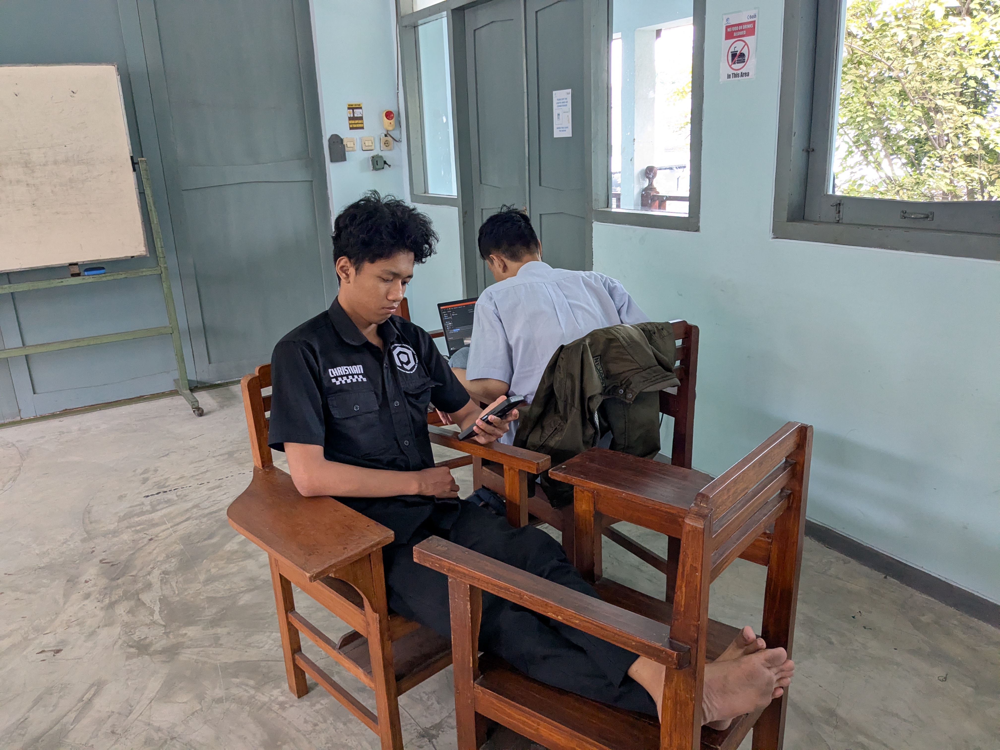
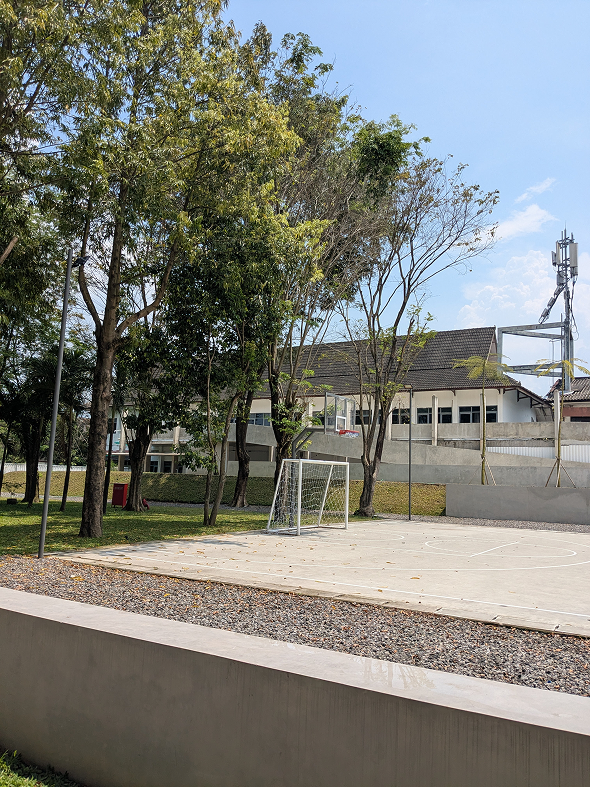
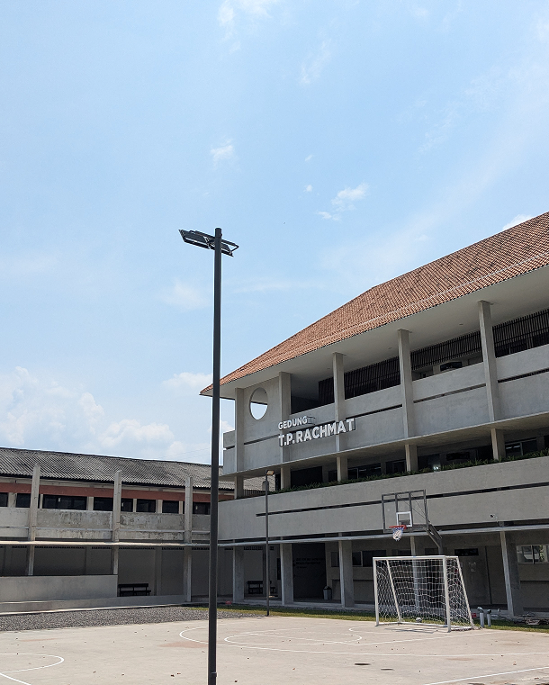
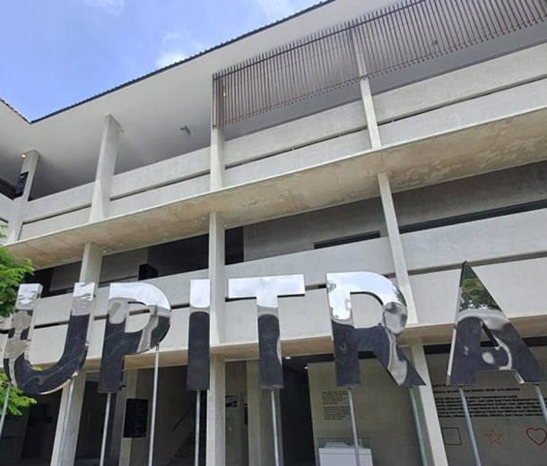

Selengkapnya

10+
Prospek Karir
Project Manager, Web Programmer, IT Consultant, dan masih banyak lagi
3
Program Studi
Sistem Informasi, Informatika, Rekayasa Perangkat Lunak
Menghasilkan lulusan yang tidak hanya cerdas, tetapi juga berkarakter.
Didirikan pada 2022, FST Upitra hadir sebagai fakultas baru yang transformatif dalam bidang Informatika, Sistem Informasi, dan Rekayasa Perangkat Lunak di bawah naungan Universitas Pignatelli Triputra.

Kami menyediakan tiga program studi unggulan di bidang sains dan teknologi
Sistem Informasi
Merancang sistem yang membantu organisasi bekerja lebih efisien dan terarah.

Mawar Hardiyanti, S.Kom, M.Kom
Ka. Prodi

Informatika
Mempelajari logika komputasi, AI, dan pengembangan teknologi inovatif.

Endang Anggiratih, ST, M.Cs
Ka. Prodi

Software Engineering
Merancang dan membangun perangkat lunak berkualitas tinggi sesuai standar industri.

Tutus Praningki, S.Kom, M.Kom
Ka. Prodi



FST Upitra adalah tempat bertumbuh dan berinovasi.
Kami hadir dengan pendidikan transformatif yang membekali mahasiswa dengan ilmu, karakter, dan semangat untuk berkontribusi nyata bagi masyarakat.
- Integrity & Ethics
- Excellence
-
 Compassion
Compassion
-
 Humility
Humility
Apa kata mahasiswa kami yang bahagia.
Pengalaman yang Mengubah Hidup
" Belajar di FST Upitra benar-benar mengubah cara pandang saya. Dosen-dosennya sangat suportif dan materi perkuliahannya relevan dengan kebutuhan industri. Saya tumbuh tidak hanya secara akademik, tetapi juga secara pribadi berkat lingkungan kampus yang inklusif. "

Rina Kusuma Dewi
Mahasiswa Sistem Informasi
Melampaui Ekspektasi
" Program studi Informatika di sini jauh melampaui ekspektasi saya. Setiap mata kuliah dirancang dengan matang, dan para dosen benar-benar peduli dengan perkembangan mahasiswa. Saya lulus dengan bekal ilmu dan kepercayaan diri yang kuat. "

Bagus Prasetyo
Mahasiswa Informatika
Komunitas yang Luar Biasa
" Yang membuat FST Upitra istimewa adalah komunitasnya. Koneksi yang saya bangun bersama rekan dan dosen sangat berharga. Lebih dari sekadar tempat belajar, ini adalah tempat saya benar-benar bertumbuh dan berkembang. "

Sari Indah Lestari
Mahasiswa Rekayasa Perangkat Lunak